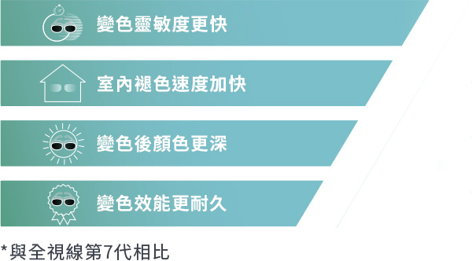
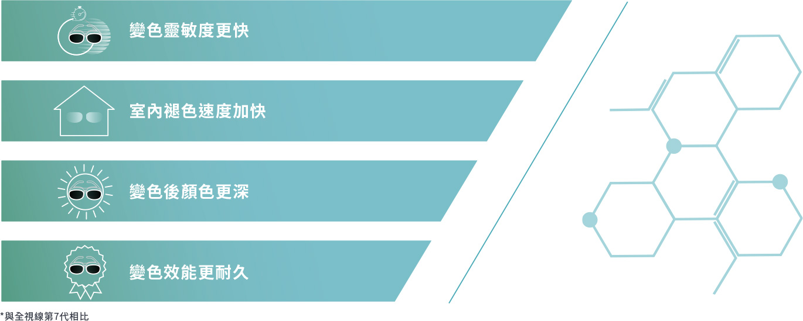
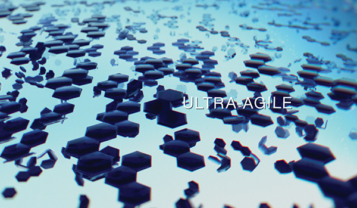
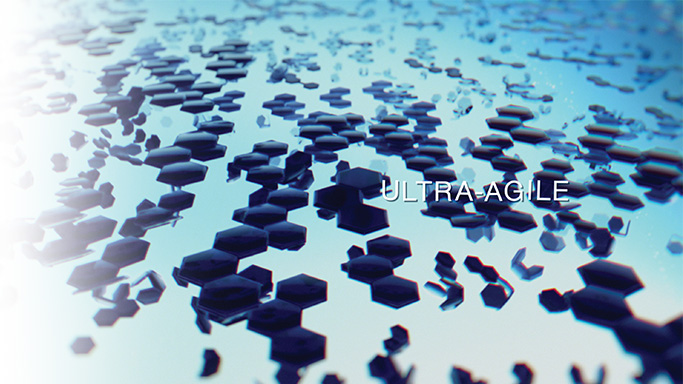
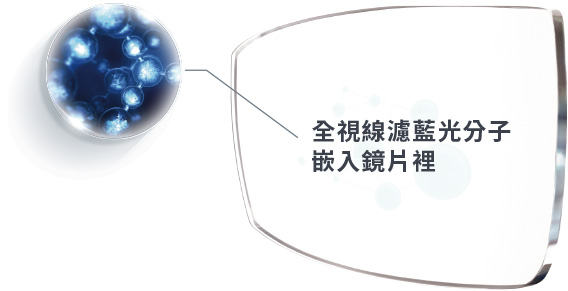
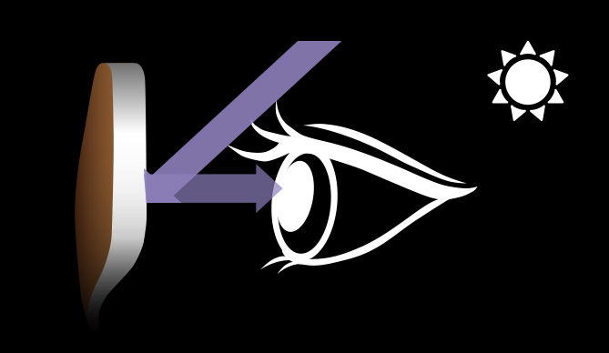

全視線第8代
全新升級，變色效果更快更持久，還能過濾藍光


全視線是如何變色的
當全視線®鏡片接觸到光線中的紫外線，鏡片中數百萬兆個變色分子會開始改變結構。
這種反應作用會令鏡片的顏色逐漸變深。
採用Gen8光感技術，這種新的獨家染料配方令鏡片對光線的變色靈敏度優於以往。


任何氣候，隨時保持舒適視覺
全視線鏡片會隨著紫外線量來改變鏡片深淺，在晴天，深色的鏡片幫您阻擋刺眼陽光，在陰天，淺色鏡 片適當阻擋紫外線，當晚上來臨，逐漸變回透明的鏡片可以保持鏡片絕佳的清晰度。
新一代濾藍光科技，濾藍光效能達25%-85%
全視線第8代鏡片將新一代藍光分子嵌入鏡片材料裡，能大幅阻擋高能量的有害藍光*，無須額外搭配濾藍光鍍膜。
*有害藍光波段380~455nm
*濾藍光效能依照變色深淺度變化，平均於室內過濾25% ，室外85%

*有害藍光波段380~455nm
*濾藍光效能依照變色深淺度變化，平均於室內過濾25% ，室外85%
雙面防UV，超強防曬保護
變色鏡片變身色後，瞳孔放大會使紫外線進入眼睛更多，配戴雙面防UV的Nikon鏡片，更能有效阻隔從鏡片表面反射的紫外線。
雙面防UV，超強防曬保護
變色鏡片變身色後，瞳孔放大會使紫外線進入眼睛更多，配戴雙面防UV的Nikon鏡片，更能有效阻隔從鏡片表面反射的紫外線。
鏡片變色前 | 紫外線進入眼中較多

鏡片變色後 | 紫外線進入眼中較少